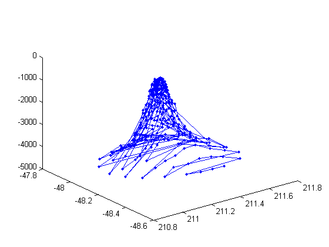
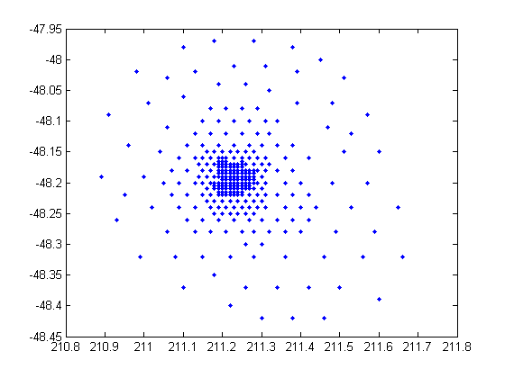
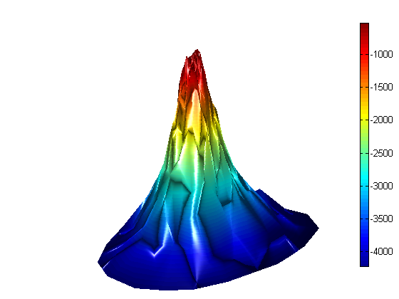

How do you turn a collection of XYZ triplets into a surface plot? This is the most frequently asked 3D plotting question that I got when I was in Tech Support.
load seamount who -file seamount
Your variables are: caption x y z
The problem is that the data is made up of individual (x,y,z) measurements. It isn't laid out on a rectilinear grid, which is what the SURF command expects. A simple plot command isn't very useful.
plot3(x,y,z,'.-')
 The solution is to use Delaunay triangulation. Let's look at some info about the "tri" variable.
tri = delaunay(x,y);
plot(x,y,'.')
 How many triangles are there?
[r,c] = size(tri); disp(r)
566
h = trisurf(tri, x, y, z);
axis vis3d

axis off l = light('Position',[-50 -15 29]) set(gca,'CameraPosition',[208 -50 7687]) lighting phong shading interp colorbar EastOutside
l = 849.0006